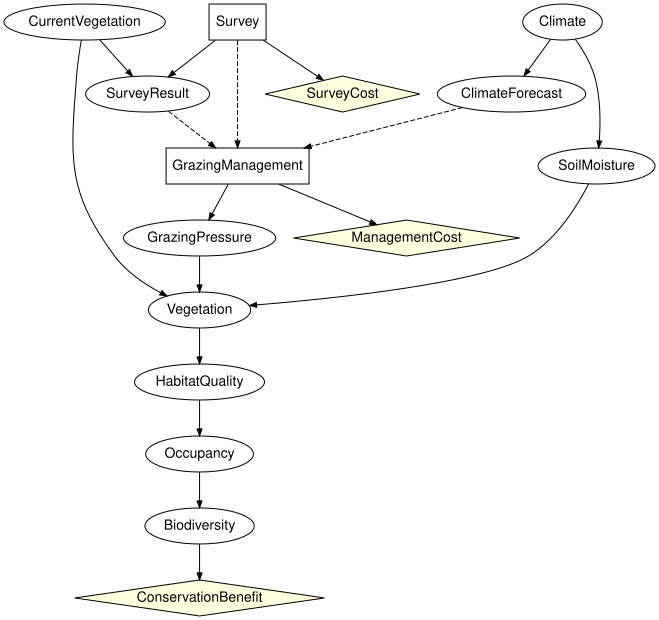

Should we survey first? Composing a monitoring decision
Simon Frost
- Overview
- Setup
- Three components
- The manager cannot read the vegetation
- Composing and checking against one large diagram
- Pricing survey designs
- The survey decision in context
- Summary
- References
Overview
Vignette 3 priced information about the current vegetation by assuming it was known exactly. A manager does not get the vegetation; they get a survey, which costs money and can be wrong. Whether to commission it is a decision in its own right, taken before the grazing decision and informing it (Runge et al. 2011). This vignette builds that two-decision problem from pieces with the open influence diagrams of CategoricalInfluenceDiagrams.jl:
site monitoring grazing
CurrentVegetation --> Survey (decision) -> SurveyResult --> the grazing diagram of vignette 3,
SurveyCost(Survey) its decision reading ClimateForecast,
Survey and SurveyResultThe boundary between the monitoring and the grazing component carries the true vegetation, which drives the ecology, and the survey, which informs the manager. Only the second is observed. The grazing component is written once; survey designs of different accuracy and cost are compared by changing the monitoring component’s numbers only. Every composite is checked against the same problem built as one influence diagram.
Setup
using EcologicalBayesianNetworks
using InfluenceDiagrams
using CategoricalInfluenceDiagramsThe numbers are those of the zoo’s grazing diagram under the third valuation of vignette 3: a benefit of 1000 for high biodiversity, and costs of 51, 25 and 0 for excluding, reducing and maintaining grazing. Under it the decision is close enough to a tie that the vegetation matters:
g = reference_grazing_id()
k = bind_utility(g, [:ConservationBenefit => [0.0, 1000.0],
:ManagementCost => [-51.0, -25.0, 0.0]])
informed = optimize(k).expected_utility
uninformed = optimize(without_information(k, :GrazingManagement, :CurrentVegetation)).expected_utility
(informed = informed, uninformed = uninformed, perfect_survey = informed - uninformed)(informed = 373.9873744375, uninformed = 373.44730347500007, perfect_survey = 0.5400709624999536)Three components
The site holds the prior on the current vegetation and passes it on, hidden: it is the state of the world, not something anyone has seen.
veg = [:sparse, :moderate, :dense]
site = Open(InfluenceDiagram(bayesnet(:CurrentVegetation => veg));
outputs = [:CurrentVegetation])
println(site)OpenInfluenceDiagram(1 variables, 1 mechanisms, 0 decisions, 0 utilities; Symbol[] -> [:CurrentVegetation])The monitoring component takes the vegetation as a hidden input. It holds the decision Survey (survey or skip), with no information of its own; the survey result, which reports a vegetation class when the survey is made and none otherwise; and the cost of surveying. It passes on the vegetation, still hidden, and the decision and its result, observed. observed flags each foot separately; here it names the two variables on the output foot only.
results = [:sparse, :moderate, :dense, :none]
monitoring = Open(influence_diagram(:CurrentVegetation => veg, :Survey => [:survey, :skip],
:SurveyResult => results;
mechanisms = [:SurveyResult => (:CurrentVegetation, :Survey)],
decisions = [:Survey => Symbol[]],
utilities = [:SurveyCost => :Survey],
closed = false);
inputs = [:CurrentVegetation],
outputs = [:CurrentVegetation, :Survey, :SurveyResult],
observed = (outputs = [:Survey, :SurveyResult],))
println(monitoring)OpenInfluenceDiagram(3 variables, 1 mechanisms, 1 decisions, 1 utilities; [:CurrentVegetation] -> [:CurrentVegetation, :Survey!, :SurveyResult!])The grazing component is the grazing diagram of vignette 3 with the current vegetation, the survey decision and its result as inputs. Its decision reads the forecast, as before, and the survey and its result in place of the vegetation. It reads the survey decision as well as the result because the composite must have no-forgetting: a later decision knows what an earlier one chose. Climate is given a root mechanism explicitly, because with closed = false a variable without one would be an input.
weather(x) = x => [:dry, :normal, :wet]
variables = [:CurrentVegetation => veg, :Survey => [:survey, :skip], :SurveyResult => results,
weather(:Climate), weather(:ClimateForecast),
:SoilMoisture => [:low, :medium, :high],
:GrazingManagement => [:exclude, :reduce, :maintain],
:GrazingPressure => [:low, :high], :Vegetation => veg,
:HabitatQuality => [:poor, :good], :Occupancy => [:absent, :present],
:Biodiversity => [:low, :high]]
ecology = [:ClimateForecast => :Climate, :SoilMoisture => :Climate,
:GrazingPressure => :GrazingManagement,
:Vegetation => (:SoilMoisture, :GrazingPressure, :CurrentVegetation),
:HabitatQuality => :Vegetation, :Occupancy => :HabitatQuality,
:Biodiversity => :Occupancy]
grazing_decision = :GrazingManagement => (:ClimateForecast, :Survey, :SurveyResult)
grazing_utilities = [:ConservationBenefit => :Biodiversity,
:ManagementCost => :GrazingManagement]
grazing = Open(influence_diagram(variables...;
mechanisms = [:Climate => Symbol[]; ecology],
decisions = [grazing_decision],
utilities = grazing_utilities, closed = false);
inputs = [:CurrentVegetation, :Survey, :SurveyResult],
observed = (inputs = [:Survey, :SurveyResult],))
println(grazing)OpenInfluenceDiagram(12 variables, 8 mechanisms, 1 decisions, 2 utilities; [:CurrentVegetation, :Survey!, :SurveyResult!] -> Symbol[])The manager cannot read the vegetation
The boundary says what the grazing decision may use. A grazing component whose decision reads the vegetation itself is refused when it is opened with the vegetation hidden (rule 3 of the typed-interface rule):
reads_vegetation = influence_diagram(variables[1:3]..., variables[7];
decisions = [:GrazingManagement => (:CurrentVegetation,
:Survey, :SurveyResult)],
closed = false)
try
Open(reads_vegetation; inputs = [:CurrentVegetation, :Survey, :SurveyResult],
observed = (inputs = [:Survey, :SurveyResult],))
catch e
sprint(showerror, e)
end"DiagramInterfaceError: rule 3 (a decision reads only internal or observed input-foot variables) is violated: decision :GrazingManagement has the hidden input :CurrentVegetation in its information set; declare it observed or remove the arc"Declaring the vegetation observed on the grazing side does not help, because the monitoring component passes it on hidden, and the two sides of a boundary must agree:
try
site ⋅ monitoring ⋅ Open(reads_vegetation;
inputs = [:CurrentVegetation, :Survey, :SurveyResult],
observed = (inputs = [:CurrentVegetation, :Survey, :SurveyResult],))
catch e
sprint(showerror, e)
end"ObservabilityMismatchError: compose: outputs(A) vs inputs(B): variable :CurrentVegetation at position 1 is :hidden on the left but :observed on the right; glued interface variables must agree on observability"A decision that sees the true state has to be written in the monitoring component, as a survey that is perfect, and then it is priced like any other survey.
Composing and checking against one large diagram
The three components compose into a closed influence diagram with two decisions and three utilities:
whole = site ⋅ monitoring ⋅ grazing
println(whole)OpenInfluenceDiagram(12 variables, 10 mechanisms, 2 decisions, 3 utilities; Symbol[] -> Symbol[])to_graphviz(apex(whole); states = false)
The same problem written as one influence diagram, with every arc stated at once, is the oracle. Its apex is isomorphic to the composite’s:
monolithic = influence_diagram(variables...;
mechanisms = [:SurveyResult => (:CurrentVegetation, :Survey);
ecology],
decisions = [:Survey => Symbol[], grazing_decision],
utilities = [:SurveyCost => :Survey; grazing_utilities])
is_isomorphic(apex(whole), monolithic)trueA survey design is its accuracy, the probability of reporting the true class (the two wrong classes share the rest equally), and its cost. design binds the zoo’s tables, the survey’s table and the utilities to the monolithic diagram, and reads off the kernels and utilities that the composite takes by name:
function survey_table(accuracy)
t = zeros(3, 2, 4) # (CurrentVegetation, Survey, SurveyResult)
for v in 1:3, r in 1:3
t[v, 1, r] = r == v ? accuracy : (1 - accuracy) / 2
end
t[:, 2, 4] .= 1.0
return t
end
chance = [:Climate, :ClimateForecast, :SoilMoisture, :CurrentVegetation, :GrazingPressure,
:Vegetation, :HabitatQuality, :Occupancy, :Biodiversity]
function design(accuracy, cost)
m = bind_cpt(InfluenceDiagramModel(monolithic),
Pair{Symbol,<:AbstractArray}[[x => cpt(kernel(k, x)) for x in chance];
:SurveyResult => survey_table(accuracy)])
m = bind_utility(m, [:SurveyCost => [-cost, 0.0], :ConservationBenefit => [0.0, 1000.0],
:ManagementCost => [-51.0, -25.0, 0.0]])
kernels = Dict{Symbol,FiniteKernel}(x => kernel(m, x) for x in [chance; :SurveyResult])
return m, kernels, Dict{Symbol,AbstractUtility}(bound_utilities(m))
end
nothing # hideA field survey that is right four times in five and costs 0.2:
m, kernels, utilities = design(0.8, 0.2)
best = optimize(whole, kernels, utilities)
oracle = optimize(m)
(composite = best.expected_utility, monolithic = oracle.expected_utility,
same_strategy = best.strategy == oracle.strategy,
brute_force = expected_utility(m, best.strategy))(composite = 373.57745744375006, monolithic = 373.57745744375006, same_strategy = true, brute_force = 373.5774574437497)The last number is the expected utility of the composite’s strategy by brute force over the joint law of the monolithic model. The survey is commissioned:
policy_table(best.strategy[:Survey])0-dimensional Array{Symbol, 0}:
:surveyThe grazing policy is a table over the forecast, the survey decision and the result. On the surveyed slice, rows are the forecast (dry, normal, wet) and columns the reported vegetation (sparse, moderate, dense, none); the none column is never reached once the survey is made:
policy_table(best.strategy[:GrazingManagement])[:, 1, :]3×4 Matrix{Symbol}:
:reduce :exclude :reduce :maintain
:reduce :exclude :reduce :maintain
:exclude :exclude :reduce :maintainIt is the split vignette 3 found with the vegetation known, now acting on the report: exclusion where the survey reports moderate vegetation, and where it reports sparse vegetation under a wet forecast; reduction elsewhere.
Pricing survey designs
The value of a survey design is what the composite earns with it, the survey made free, minus what it earns without it. Changing the design changes one table and one utility of the monitoring component; the grazing component and the composite are untouched:
value(accuracy) = optimize(whole, design(accuracy, 0.0)[2:3]...).expected_utility - uninformed
accuracies = [1 / 3, 0.5, 0.6, 0.7, 0.8, 0.9, 1.0]
[round(a; digits = 2) => round(value(a); digits = 3) for a in accuracies]7-element Vector{Pair{Float64, Float64}}:
0.33 => 0.0
0.5 => 0.084
0.6 => 0.151
0.7 => 0.225
0.8 => 0.33
0.9 => 0.435
1.0 => 0.54A survey that reports at random (accuracy one third) is worth nothing, and a perfect one is worth exactly what vignette 3 found for knowing the vegetation. In between the value falls below the straight line joining them: a survey right four times in five recovers about 60% of the perfect-information value where the line would give 70%, and one right three times in five under 30% where the line would give 40%. That is the number to set against a quoted survey cost, not the perfect-information bound.
The value is also the break-even cost. Priced just below it the survey is commissioned, and just above it it is not:
v8 = value(0.8)
[round(c; digits = 3) => policy_table(optimize(whole, design(0.8, c)[2:3]...).strategy[:Survey])
for c in (v8 - 0.01, v8 + 0.01)]2-element Vector{Pair{Float64, Array{Symbol, 0}}}:
0.32 => fill(:survey)
0.34 => fill(:skip)The survey decision in context
The monitoring component is open, so it has no expected utility of its own. It has one in a context: the law the site induces on the vegetation, and the value that the grazing component earns from each joint state of the vegetation, the survey choice and the result. That value depends on the grazing policy, so the context is fixed by choosing one. With the grazing policy of the composite’s optimum, the monitoring component optimised in context commissions the survey and attains the composite’s optimum:
ν = boundary_law(site, kernels, utilities, Strategy())
grazing_value(τ) = continuation_value(grazing, kernels, utilities,
Strategy(:GrazingManagement => τ))
informed_policy = best.strategy[:GrazingManagement]
with_informed = contextual_optimize(monitoring, kernels, utilities; prior = ν,
continuation = grazing_value(informed_policy))
(survey = policy_table(with_informed.strategy[:Survey]),
value = with_informed.expected_utility,
matches_composite = with_informed.expected_utility ≈ best.expected_utility)(survey = fill(:survey), value = 373.57745744375006, matches_composite = true)A survey is worth only what the manager does differently because of it. Take instead the grazing policy that is optimal without a survey, which reads only the forecast, copied across every survey result. It is read off the composite with the survey priced at 1, above its value, where the survey is skipped and the result is always none. Against it the survey earns nothing but its cost, and the monitoring component optimised in context skips it:
skipped = optimize(whole, design(0.8, 1.0)[2:3]...)
forecast_only = policy_table(skipped.strategy[:GrazingManagement])[:, 2, 4]
ignoring = DeterministicPolicy(:GrazingManagement,
[FiniteAxis(:ClimateForecast, [:dry, :normal, :wet]),
FiniteAxis(:Survey, [:survey, :skip]),
FiniteAxis(:SurveyResult, results)],
FiniteAxis(:GrazingManagement, [:exclude, :reduce, :maintain]),
[forecast_only[f] for f in 1:3, s in 1:2, r in 1:4])
c_ignoring = grazing_value(ignoring)
with_ignoring = contextual_optimize(monitoring, kernels, utilities; prior = ν,
continuation = c_ignoring)
surveyed_anyway = contextual_value(monitoring, kernels, utilities,
Strategy(:Survey => ConstantPolicy(:survey));
prior = ν, continuation = c_ignoring)
(survey = policy_table(with_ignoring.strategy[:Survey]),
skip_value = with_ignoring.expected_utility, uninformed = uninformed,
surveyed_anyway = surveyed_anyway, uninformed_minus_cost = uninformed - 0.2)(survey = fill(:skip), skip_value = 373.4473034750002, uninformed = 373.44730347500007, surveyed_anyway = 373.2473034750002, uninformed_minus_cost = 373.2473034750001)So the survey and the grazing policy cannot be settled one at a time. Valued against the grazing policy chosen without it, a survey never pays and is never commissioned; valued against the policy that uses it, it pays whenever it costs less than about 0.33. The optimum of the composite is the best pair, which optimize finds on the closed composite, and which the monitoring component attains in context only once the grazing policy that goes with it is known.
Summary
The decision to monitor was added to the grazing problem of vignette 3 as a component of its own, between the site and the grazing diagram. The boundary carries the true vegetation hidden and the survey observed, so the grazing decision can act only on what the survey reports, and a component that tried to read the vegetation was refused. The composite is isomorphic to the problem written as one diagram and agrees with it on the optimum, the strategy and a brute-force evaluation. Survey designs were compared by changing the monitoring component’s numbers alone; an 80% accurate survey is worth about 60% of perfect information, and that, not the perfect-information bound, is what its price should be compared with. Optimised in the context the site and the grazing component induce, the monitoring component commissions the survey when the grazing policy uses its result, and skips it when the policy ignores the result, which is why the two decisions are optimised together.
References
Runge, Michael C., Sarah J. Converse, and James E. Lyons. 2011. “Which Uncertainty? Using Expert Elicitation and Expected Value of Information to Design an Adaptive Program.” Biological Conservation 144 (4): 1214–23. https://doi.org/10.1016/j.biocon.2010.12.020.